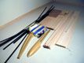

|
| Photo of Mark's Allegro-Lite by Jan Kansky |
|---|
|
The Allegro-Lite wing utilizes built-up construction techniques with a kevlar wrapped, carbon fiber capped, end-grain balsa core spar. The carbon fiber spar caps are formed from precured tapered laminates which are cut to size and bonded in as the wing is built. The spar core is formed from the ribs (airfoil cross-sections) and webs (tapered end-grain balsa blocks) which occupy the spaces between the ribs. The caps are bonded top and bottom to rows of ribs and webs and cured. The cured assembly is wrapped with kevlar tow and wetted with resin. The remaining wing construction details are similar to traditional built-up airplane designs.
|
The Allegro-Lite fuselage is a pod and boom configuration. The pod is made of kevlar with some carbon fiber reinforcement. The boom is a tapered carbon fiber tube which has unidirectional and bias plies. The tail surfaces are carbon fiber reinforced balsa, shaped to airfoil cross sections, and covered with shrink polyester covering. The horizontal stabilizer is fully flying with a carbon fiber hinge/support. The vertical stabilizer is hinged with a kevlar flexure hinge.
These pages by James Osborn detail the construction of the Allegro-Lite utilizing a short run kit that was spearheaded by Patrick Sloan. Pat offered a couple versions of the kits which included various necessary items for construction of the Allegro-Lite such as web/rib sets, pre-cured carbon fiber laminates and joiner rods, kevlar tow, teflon pushrod housing, balsa for leading and trailing edges, balsa for D-tube sheeting, pre-fabricated carbon fiber elevator mounts and kevlar hinges by Mark Drela, etc. This has undoubtedly allowed many to pursue building an Allegro-Lite who otherwise might not have tried. Count me in that group. Three Cheers for Pat!!
Before deciding to pursue the kits, Pat started the Allegro-Lite yahoo group to support builders interested in the Allegro-Lite. The group, details of which can be found at http://groups.yahoo.com/group/Allegro-Lite, has become the defacto forum for discussing all of Mark Drela's R/C designs, including the 3 meter version of the Allegro-Lite called the Bubble Dancer, and the SuperGee, Mark's latest Discus Launch Glider design. Pat and I both would like to acknowledge and thank Mark Drela for his constant presence in the group, answering questions and imparting knowledge and wisdom to all.
Pat was the motivating force behind getting Laser Arts to offer a laser-cut web and rib set and to have commercial production runs of Allegro-Lite booms made to Mark Drela's specifications. Many others, too numerous to list here, have provided advice, building experience, and tips to the group. Pat wishes to particularly acknowlege Jacques Blain for his assistance in organizing the wood parts details for the kits and for his suggestion to use Lone Star Balsa as the supplier. Pat would also like to particularly acknowledge Rick Walba for his assistance in locating a carbon fiber boom manufacturer. Rick is also the guy who cut the carbon joiners in the kit to the correct shallow angle. Thanks Rick! Pat still offers the Allegro-Lite booms for sale occasionally, contact him for details. Contact Rick for technical details on the Allegro-Lite boom or about future plans for a Bubble Dancer boom production run.
Several Allegro-Lite group members offered kevlar pods fabricated from Mark Drela's original molds. The pod featured in these pages was fabricated by Mike Bailey. The prefabricated elevator mounts by Mark Drela were provided with kits in limited supply. The mount pictured in these pages was fabricated by Bud Elder. Bud has told me that he will continue to offer the elevator mounts as needed, contact him for details.
|  | Pile O' Parts | Balsa for D-Tube Sheeting |
|---|
Note the building sequence in these pages presumes you have a complete "long" kit put together by Pat Sloan, an Allegro-Lite boom, tail mount, and pod. I was fortunate to get in on the original kit, boom, and pod deals. If you are not so fortunate, you can at least purchase the lasercut web/rib set from Laser Arts, and utilize many of the instructions here and details available on the Allegro-Lite Home Page to purchase composites, wood, and fabricate everything you'll need from scratch.
Find below an outline of the building process. There are three main building tasks: the wing, tail, and fuselage. As of the current date, I have not completed my Allegro-Lite, so these instructions are not complete. The building sequences that I have documented, are linked below as appropriate to the cookbook pages that describe those sequences. If you are looking for a sequence that is not linked below, you can check back in the future as I will flesh this out completely, eventually. Or drop me a line and I'll let you know the status.
I present the building tasks in the order I approached them, but you can probably do them in a different order if you are thoughtful about it. It is envisioned that if you choose to use the cookbook format, you will visit each link below, print it out, and use the provided checkboxes to mark off your progress. Enjoy and please e-mail any errata, feedback, or suggestions to James Osborn.
| Revised 2/5/2003 James R. Osborn |
|---|
{kind=link}
{kind=link}
{kind=link}